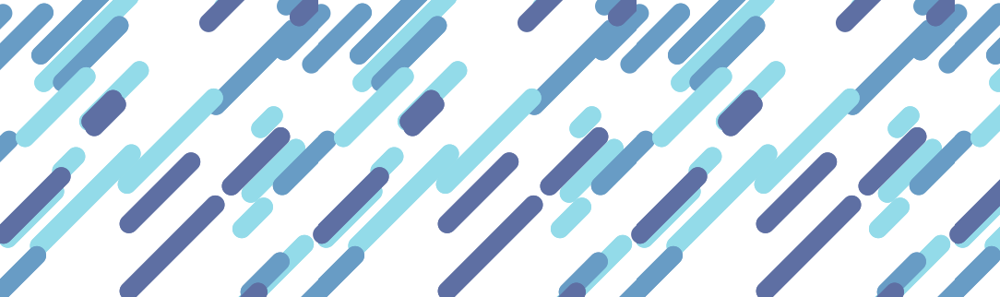
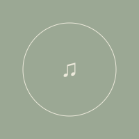

 ↗▌ ▌ ▛▀▘ ▌ ▌ ▞▀▖ ▛▀▌ ▙▄ ▌ ▌ ▌ ▌ ▌ ▌ ▙▄▖ ▙▄▖ ▙▄▖ ▚▄▘欢迎来到我的世界 ▋ 软件开发工程师 | 保持好奇，持续探索 | 近况：在世界里慢慢走—— " 人生的本质是单机游戏，祝你我皆玩的开心。"  01♫等待一首歌你的私人收藏02♫等待一首歌你的私人收藏03♫等待一首歌你的私人收藏等待一首歌你的私人电台 选一首歌，让这里有一点声音。0:000:00 Vol. 01 拾光笔记 学习、产品与思考Vol. 02 漫步日常 音乐、旅行与生活Vol. 03 造物手记 项目、作品与实践Vol. 04 漫游档案 经历、兴趣与足迹 这里也有一个小小的命令入口。输入 help，或直接点击页面导航。visitor@garden:~ $↵LOCAL NAVIGATION · 一点终端的趣味🌱 DIGITAL GARDEN MANIFESTO